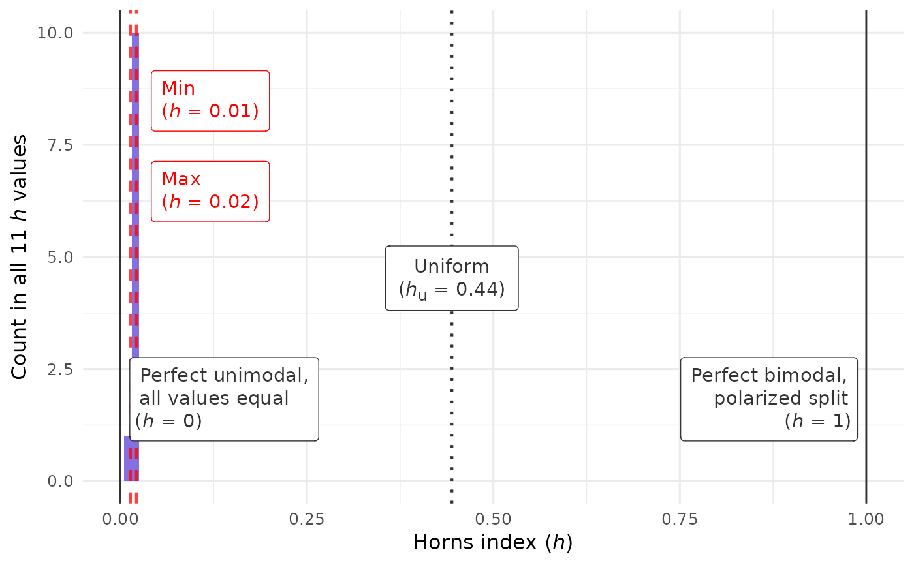
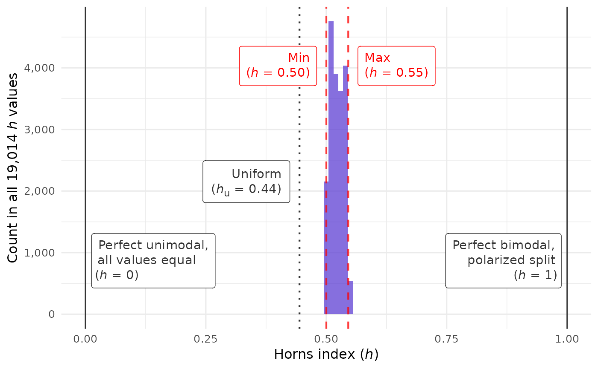
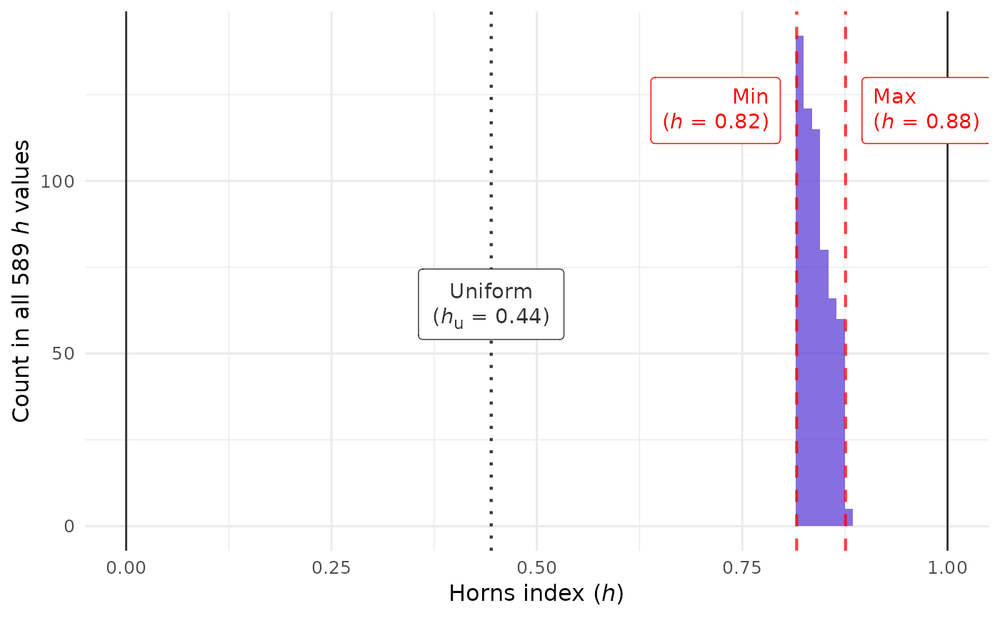
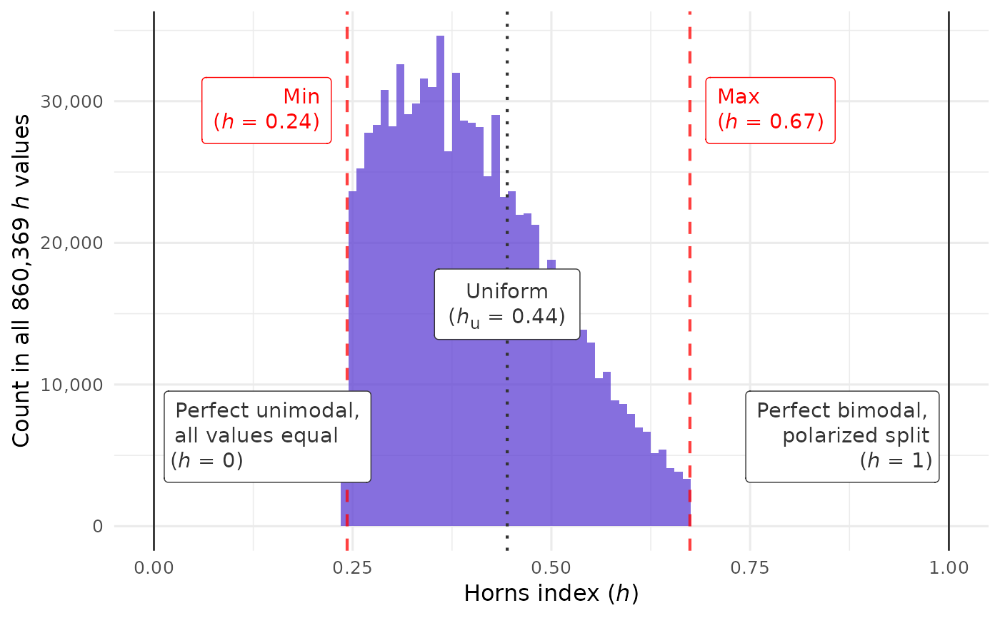

closure_plot_horns_histogram() visualizes the distribution of
horns index values found by CLOSURE.
It marks the min, max, and uniform values; see horns_uniform(). The
x-axis always ranges from 0 to 1. This reveals the big picture, putting any
variability among horns values into perspective.
Usage
closure_plot_horns_histogram(
data,
bar_color = "#5D3FD3",
alpha = 0.75,
binwidth = 0.01,
show_labels = c("all", "min_max", "min_max_uniform", "min_max_bounds", "uniform",
"uniform_bounds", "bounds", "none"),
line_color_min_max = "red",
line_color_reference = "grey20",
text_limits = c(0.12, 0.88),
text_size = 12,
mark_thousand = ",",
mark_decimal = "."
)Arguments
- data
List returned by
closure_generate()orclosure_read().- bar_color
String (length 1). Color of the bars. Default is
"#5D3FD3", a purple color.- alpha
Numeric (length 1). Opacity of the bars. Default is
0.75.- binwidth
Numeric (length 1). Only in
closure_plot_horns_histogram(). Width of the bins that divide up the x-axis. Default is0.01.- show_labels
String (length 1). Which text labels to show within the plot? One of:
"all"(the default): min, max, and uniform horns values fromdata, as well as the bounds at 0 and 1."min_max","min_max_uniform","min_max_bounds","uniform","uniform_bounds", or"bounds": a subset of these labels."none": no labels.
- line_color_min_max
String (length 1). Color of the lines that mark the lower and upper ends of the distribution. Default is
"red".- line_color_reference
String (length 1). Color of the lines at h = 0, h = 1, and the uniform point. Default is
"grey20".- text_limits
Numeric (length 2). If the minimum horns index is lower than the first element here (default:
0.12), both text labels go to the right of the maximum. The same applies in reverse with the maximum and the second element (default:0.88).- text_size
Numeric (length 1). Base font size in pt. Default is
12.- mark_thousand, mark_decimal
Strings (length 1 each). Delimiters between groups of digits in text labels. Defaults are
","formark_thousand(e.g.,"20,000") and"."formark_decimal(e.g.,"0.15").
Examples
data_near_zero <- closure_generate(
mean = "2.1",
sd = "0.4",
n = 35,
scale_min = 1,
scale_max = 7
)
#> → Just a second...
#>
#> ✔ All CLOSURE results found
# All CLOSURE samples have low horns indices:
closure_plot_horns_histogram(data_near_zero)

data_near_midpoint <- closure_generate(
mean = "4.3",
sd = "2.2",
n = 35,
scale_min = 1,
scale_max = 7
)
#> → This could take a minute...
#>
#> ✔ All CLOSURE results found
# The min-max lines are beyond the midpoint,
# so all CLOSURE samples are bimodal:
closure_plot_horns_histogram(data_near_midpoint)

data_near_one <- closure_generate(
mean = "4.3",
sd = "2.8",
n = 35,
scale_min = 1,
scale_max = 7
)
#> → This could take a minute...
#>
#> ✔ All CLOSURE results found
# Extremely high variance throughout; close to the upper limit.
# We can omit labels at the bounds so they don't cover the data:
closure_plot_horns_histogram(
data_near_one,
show_labels = "min_max_uniform"
)

# Large differences between horns values occur (only?)
# if `mean` and `sd` have no decimal places:
data_wide_spread <- closure_generate(
mean = "3",
sd = "2",
n = 35,
scale_min = 1,
scale_max = 7
)
#> → This could take a minute...
#>
#> ✔ All CLOSURE results found
closure_plot_horns_histogram(data_wide_spread)
